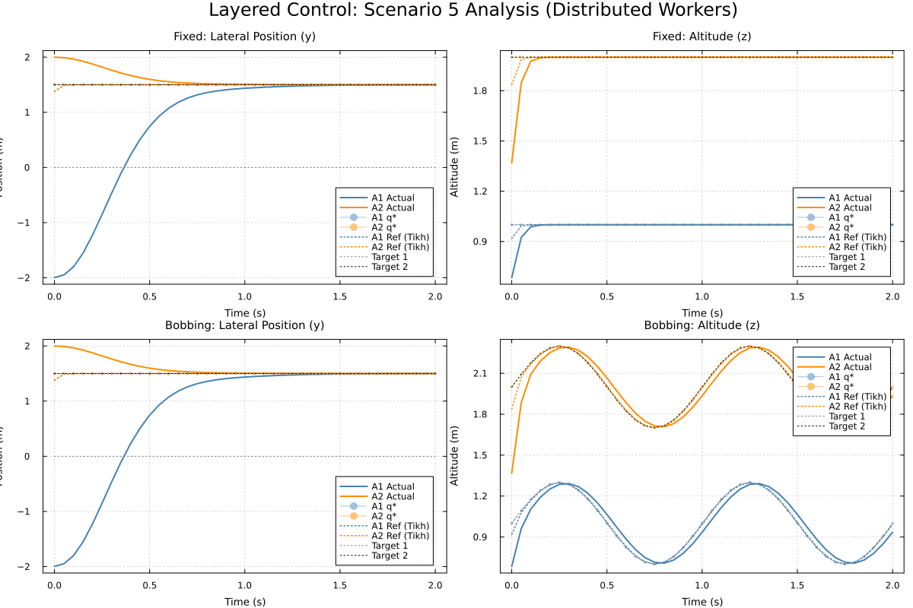

Layered Control Architecture for Multi-Quadrotor Tracking
This example demonstrates a layered control architecture designed for multi-agent target tracking where high-level coordination is handled by a static cellular sheaf and low-level tracking is managed by independent LQR controllers.
Architecture Overview
The control pipeline is structured as follows:
- Coordination Sheaf: Resolves the conflict between target tracking and agent consensus by computing a harmonic extension $\mathbf{q}^*$ that minimizes a global energy functional.
- Tikhonov Filter: Smooths the resulting harmonic reference to ensure physical realizability and eliminate instantaneous jumps in the reference.
- LQR Control: Drives each agent to the filtered reference using an optimal state-feedback gain computed via the Discrete Algebraic Riccati Equation (DARE).
This separation of concerns allows the system to handle complex coordination constraints (like the "mirror $y$-consensus" in Scenario 5) independently of the low-level vehicle dynamics.
using CellularSheaves
import CellularSheaves.NetworkSheaves.EuclideanSheaves: _harmonic_extension_restricted_laplacian
using CellularSheaves.ControlSheaves.Tikhonov
using CellularSheaves.TrajectorySheaves: continuous_to_discrete_zoh
using LinearAlgebra
using Plots
using PrintfSetup Dynamics & Constants
Quadrotor parameters
g = 9.81
m_veh = 0.5
I_quad = 0.01
ell = 0.250.25Continuous-time dynamics: xdot = Acx + Bcu State x = [y, z, theta, ydot, zdot, thetadot]
Ac = [0.0 0.0 0.0 1.0 0.0 0.0;
0.0 0.0 0.0 0.0 1.0 0.0;
0.0 0.0 0.0 0.0 0.0 1.0;
0.0 0.0 -g 0.0 0.0 0.0;
0.0 0.0 0.0 0.0 0.0 0.0;
0.0 0.0 0.0 0.0 0.0 0.0]
Bc = [0.0 0.0;
0.0 0.0;
0.0 0.0;
0.0 0.0;
1.0 / m_veh 1.0 / m_veh;
ell / (2I_quad) -ell / (2I_quad)]
h = 0.05 # Time step
Ad, Bd = continuous_to_discrete_zoh(Ac, Bc, h)
nx = size(Ad, 1) # State dimension
nu = size(Bd, 2) # Input dimension2Compute Optimal LQR Gain (Discrete-time) We use a non-uniform Q matrix to penalize position errors more than velocity errors, reducing overshoot while maintaining a fast response.
Q_diag = zeros(nx)
Q_diag[1:2] .= 10000.0 # Position penalty
Q_diag[3] = 50.0 # Lower penalty on angle
Q_diag[4] = 500.0 # Damping for y-velocity
Q_diag[5:6] .= 10.0 # Other velocity penalties
Q_lqr = Matrix{Float64}(Diagonal(Q_diag))
R_lqr = Matrix{Float64}(I, nu, nu) * 0.0001
function solve_dare(A, B, Q, R)
# Iteratively solve the Discrete Algebraic Riccati Equation (DARE)
P = Q
for i in 1:100
P_next = A' * P * A - (A' * P * B) * inv(R + B' * P * B) * (B' * P * A) + Q
if norm(P_next - P) < 1e-6
break
end
P = P_next
end
return (R + B' * P * B) \ (B' * P * A)
end
K_lqr = solve_dare(Ad, Bd, Q_lqr, R_lqr)2×6 Matrix{Float64}:
-17.1445 88.2682 12.1291 -7.55591 7.20593 1.07321
17.1445 88.2682 -12.1291 7.55591 7.20593 -1.07321Verify stability: Spectral radius of (Ad - Bd*K) must be < 1
A_cl = Ad - Bd * K_lqr
rho = maximum(abs.(eigvals(A_cl)))
@printf("Closed-loop spectral radius: %.4f\n", rho)Closed-loop spectral radius: 0.8043Coordination Sheaf Construction
Scenario 5 Configuration:
- Agent 1 tracks Target 1 in z
- Agent 2 tracks Target 2 in yz
- Agents agree in y (Consensus)
D = nx
NA = 2 # Number of Agents
NT = 2 # Number of Targets
TotalV = NA + NT
sheaf = EuclideanSheaf{Float64}(fill(D, TotalV))A network sheaf with 4 vertex stalks and 0 edge stalks.
Coordinate projection matrices
R_y = zeros(1, D); R_y[1] = 1.0
R_z = zeros(1, D); R_z[2] = 1.0
R_yz = zeros(2, D); R_yz[1, 1] = 1.0; R_yz[2, 2] = 1.01.0Setup coordination edges
add_sheaf_edge!(sheaf, 1, 2, R_y, R_y) # Consensus: A1 <-> A2 in y
add_sheaf_edge!(sheaf, 1, 3, R_z, R_z) # Tracking: A1 -> T1 in z
add_sheaf_edge!(sheaf, 2, 4, R_yz, R_yz) # Tracking: A2 -> T2 in yz3Boundary conditions for restricted Laplacian
boundary0 = Dict{Int, Vector{Float64}}()
boundary0[3] = zeros(D)
boundary0[4] = zeros(D)
_, _, Hraw, LIBraw = _harmonic_extension_restricted_laplacian(sheaf, boundary0)
H = Matrix(Hraw)
LIB = Matrix(LIBraw)12×12 Matrix{Float64}:
-0.0 -0.0 -0.0 -0.0 -0.0 -0.0 0.0 0.0 0.0 0.0 0.0 0.0
-0.0 -1.0 -0.0 -0.0 -0.0 -0.0 0.0 0.0 0.0 0.0 0.0 0.0
-0.0 -0.0 -0.0 -0.0 -0.0 -0.0 0.0 0.0 0.0 0.0 0.0 0.0
-0.0 -0.0 -0.0 -0.0 -0.0 -0.0 0.0 0.0 0.0 0.0 0.0 0.0
-0.0 -0.0 -0.0 -0.0 -0.0 -0.0 0.0 0.0 0.0 0.0 0.0 0.0
-0.0 -0.0 -0.0 -0.0 -0.0 -0.0 0.0 0.0 0.0 0.0 0.0 0.0
0.0 0.0 0.0 0.0 0.0 0.0 -1.0 -0.0 -0.0 -0.0 -0.0 -0.0
0.0 0.0 0.0 0.0 0.0 0.0 -0.0 -1.0 -0.0 -0.0 -0.0 -0.0
0.0 0.0 0.0 0.0 0.0 0.0 -0.0 -0.0 -0.0 -0.0 -0.0 -0.0
0.0 0.0 0.0 0.0 0.0 0.0 -0.0 -0.0 -0.0 -0.0 -0.0 -0.0
0.0 0.0 0.0 0.0 0.0 0.0 -0.0 -0.0 -0.0 -0.0 -0.0 -0.0
0.0 0.0 0.0 0.0 0.0 0.0 -0.0 -0.0 -0.0 -0.0 -0.0 -0.0Simulation Framework
function run_layered_simulation(target_type=:bobbing)
# Define target trajectories as local functions
local t1_pos, t2_pos
if target_type == :bobbing
omega = 2π * 2 / (40 * h)
t1_pos = t -> [0.0, 1.0 + 0.3sin(omega*t), 0.0, 0.0, 0.0, 0.0]
t2_pos = t -> [1.5, 2.0 + 0.3sin(omega*t), 0.0, 0.0, 0.0, 0.0]
else
t1_pos = t -> [0.0, 1.0, 0.0, 0.0, 0.0, 0.0]
t2_pos = t -> [1.5, 2.0, 0.0, 0.0, 0.0, 0.0]
end
# Simulation parameters
T_end = 2.0
steps = Int(T_end / h) + 1
epsilon = 0.02
filters = [TikhonovFilter(zeros(D); epsilon) for _ in 1:NA]
curr_states = [[-2.0, 0.5, 0.0, 0.0, 0.0, 0.0],
[2.0, 1.0, 0.0, 0.0, 0.0, 0.0]]
sim_data = zeros(steps, NA, nx)
qstar_history = zeros(steps, NA, nx)
filtered_ref_history = zeros(steps, NA, nx)
for t_idx in 0:(steps-1)
t = t_idx * h
b_t = [t1_pos(t); t2_pos(t)]
# High-level Coordination: Solve for the harmonic reference q*
# We use pinv to handle potential singularities in the coordination sheaf
qstar_full = pinv(H) * (-LIB * b_t)
# Distribute reference to agents
qstar = [qstar_full[1:D], qstar_full[D+1:2D]]
for i in 1:NA
qstar_history[t_idx+1, i, :] = qstar[i]
# Mid-level Smoothing: Tikhonov filter
tikhonov_step!(filters[i], qstar[i], qstar[i], h)
filtered_ref_history[t_idx+1, i, :] = filters[i].x
# Low-level Control: LQR Tracking
x = curr_states[i]
x_ref = filters[i].x
u = -K_lqr * (x - x_ref)
curr_states[i] = Ad * x + Bd * u
end
for i in 1:NA
sim_data[t_idx+1, i, :] = curr_states[i]
end
end
return sim_data, qstar_history, filtered_ref_history, t1_pos, t2_pos
endrun_layered_simulation (generic function with 2 methods)Execution and Visualization
function plot_results(sim_fixed, q_fixed, ref_fixed, t1_fixed, t2_fixed, sim_bob, q_bob, ref_bob, t1_bob, t2_bob, filename)
# Create a 2x2 layout: Fixed targets on top, Bobbing targets on bottom
p = plot(layout=(2, 2), size=(1200, 800), plot_title="Layered Control: Scenario 5 Analysis")
t_axis = range(0, step=h, length=size(sim_fixed, 1))
plot!(p[1], t_axis, sim_fixed[:, 1, 1], label="A1 Actual", color=:steelblue, lw=2)
plot!(p[1], t_axis, sim_fixed[:, 2, 1], label="A2 Actual", color=:darkorange, lw=2)
plot!(p[1], t_axis, q_fixed[:, 1, 1], label="A1 q*", color=:steelblue, alpha=0.5, ls=:dash, marker=:circle, ms=2)
plot!(p[1], t_axis, q_fixed[:, 2, 1], label="A2 q*", color=:darkorange, alpha=0.5, ls=:dash, marker=:circle, ms=2)
plot!(p[1], t_axis, ref_fixed[:, 1, 1], label="A1 Ref (Tikh)", color=:steelblue, ls=:dot, lw=1.5)
plot!(p[1], t_axis, ref_fixed[:, 2, 1], label="A2 Ref (Tikh)", color=:darkorange, ls=:dot, lw=1.5)
plot!(p[1], t_axis, [t1_fixed(t)[1] for t in t_axis], label="Target 1", color=:gray, ls=:dot)
plot!(p[1], t_axis, [t2_fixed(t)[1] for t in t_axis], label="Target 2", color=:black, ls=:dot)
title!(p[1], "Fixed: Lateral Position (y)")
xlabel!(p[1], "Time (s)")
ylabel!(p[1], "Position (m)")
# Fixed Z
plot!(p[2], t_axis, sim_fixed[:, 1, 2], label="A1 Actual", color=:steelblue, lw=2)
plot!(p[2], t_axis, sim_fixed[:, 2, 2], label="A2 Actual", color=:darkorange, lw=2)
plot!(p[2], t_axis, [q_fixed[t, 1, 2] for t in 1:41], label="A1 q*", color=:steelblue, alpha=0.5, ls=:dash, marker=:circle, ms=2)
plot!(p[2], t_axis, [q_fixed[t, 2, 2] for t in 1:41], label="A2 q*", color=:darkorange, alpha=0.5, ls=:dash, marker=:circle, ms=2)
plot!(p[2], t_axis, [ref_fixed[t, 1, 2] for t in 1:41], label="A1 Ref (Tikh)", color=:steelblue, ls=:dot, lw=1.5)
plot!(p[2], t_axis, [ref_fixed[t, 2, 2] for t in 1:41], label="A2 Ref (Tikh)", color=:darkorange, ls=:dot, lw=1.5)
plot!(p[2], t_axis, [t1_fixed(t)[2] for t in t_axis], label="Target 1", color=:gray, ls=:dot)
plot!(p[2], t_axis, [t2_fixed(t)[2] for t in t_axis], label="Target 2", color=:black, ls=:dot)
title!(p[2], "Fixed: Altitude (z)")
xlabel!(p[2], "Time (s)")
ylabel!(p[2], "Altitude (m)")
# --- Row 2: Bobbing Targets (Y and Z) ---
# Bobbing Y
plot!(p[3], t_axis, sim_bob[:, 1, 1], label="A1 Actual", color=:steelblue, lw=2)
plot!(p[3], t_axis, sim_bob[:, 2, 1], label="A2 Actual", color=:darkorange, lw=2)
plot!(p[3], t_axis, [q_bob[t, 1, 1] for t in 1:41], label="A1 q*", color=:steelblue, alpha=0.5, ls=:dash, marker=:circle, ms=2)
plot!(p[3], t_axis, [q_bob[t, 2, 1] for t in 1:41], label="A2 q*", color=:darkorange, alpha=0.5, ls=:dash, marker=:circle, ms=2)
plot!(p[3], t_axis, [ref_bob[t, 1, 1] for t in 1:41], label="A1 Ref (Tikh)", color=:steelblue, ls=:dot, lw=1.5)
plot!(p[3], t_axis, [ref_bob[t, 2, 1] for t in 1:41], label="A2 Ref (Tikh)", color=:darkorange, ls=:dot, lw=1.5)
plot!(p[3], t_axis, [t1_bob(t)[1] for t in t_axis], label="Target 1", color=:gray, ls=:dot)
plot!(p[3], t_axis, [t2_bob(t)[1] for t in t_axis], label="Target 2", color=:black, ls=:dot)
title!(p[3], "Bobbing: Lateral Position (y)")
xlabel!(p[3], "Time (s)")
ylabel!(p[3], "Position (m)")
# Bobbing Z
plot!(p[4], t_axis, sim_bob[:, 1, 2], label="A1 Actual", color=:steelblue, lw=2)
plot!(p[4], t_axis, sim_bob[:, 2, 2], label="A2 Actual", color=:darkorange, lw=2)
plot!(p[4], t_axis, [q_bob[t, 1, 2] for t in 1:41], label="A1 q*", color=:steelblue, alpha=0.5, ls=:dash, marker=:circle, ms=2)
plot!(p[4], t_axis, [q_bob[t, 2, 2] for t in 1:41], label="A2 q*", color=:darkorange, alpha=0.5, ls=:dash, marker=:circle, ms=2)
plot!(p[4], t_axis, [ref_bob[t, 1, 2] for t in 1:41], label="A1 Ref (Tikh)", color=:steelblue, ls=:dot, lw=1.5)
plot!(p[4], t_axis, [ref_bob[t, 2, 2] for t in 1:41], label="A2 Ref (Tikh)", color=:darkorange, ls=:dot, lw=1.5)
plot!(p[4], t_axis, [t1_bob(t)[2] for t in t_axis], label="Target 1", color=:gray, ls=:dot)
plot!(p[4], t_axis, [t2_bob(t)[2] for t in t_axis], label="Target 2", color=:black, ls=:dot)
title!(p[4], "Bobbing: Altitude (z)")
xlabel!(p[4], "Time (s)")
ylabel!(p[4], "Altitude (m)")
savefig(filename)
endplot_results (generic function with 1 method)Run both scenarios
sim_fixed, q_fixed, ref_fixed, t1_fixed, t2_fixed = run_layered_simulation(:fixed)
sim_bob, q_bob, ref_bob, t1_bob, t2_bob = run_layered_simulation(:bobbing)
plot_results(sim_fixed, q_fixed, ref_fixed, t1_fixed, t2_fixed, sim_bob, q_bob, ref_bob, t1_bob, t2_bob, "layered_control_combined.png")"/home/runner/work/CellularSheaves.jl/CellularSheaves.jl/docs/build/generated/layered/layered_control_combined.png"